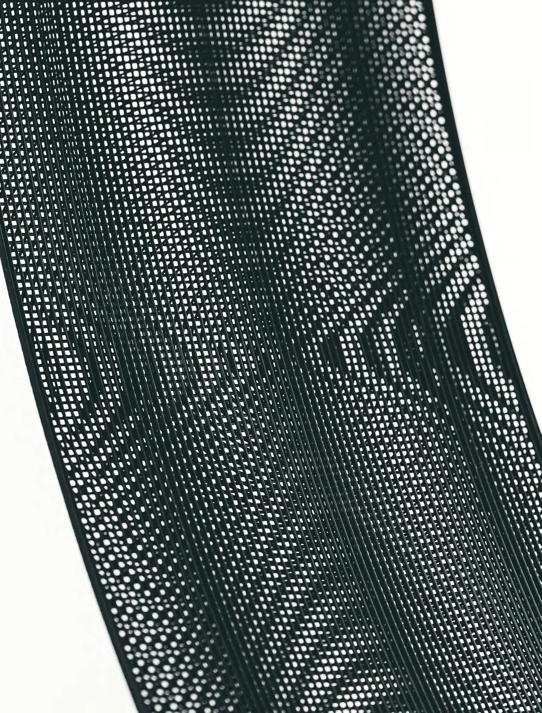
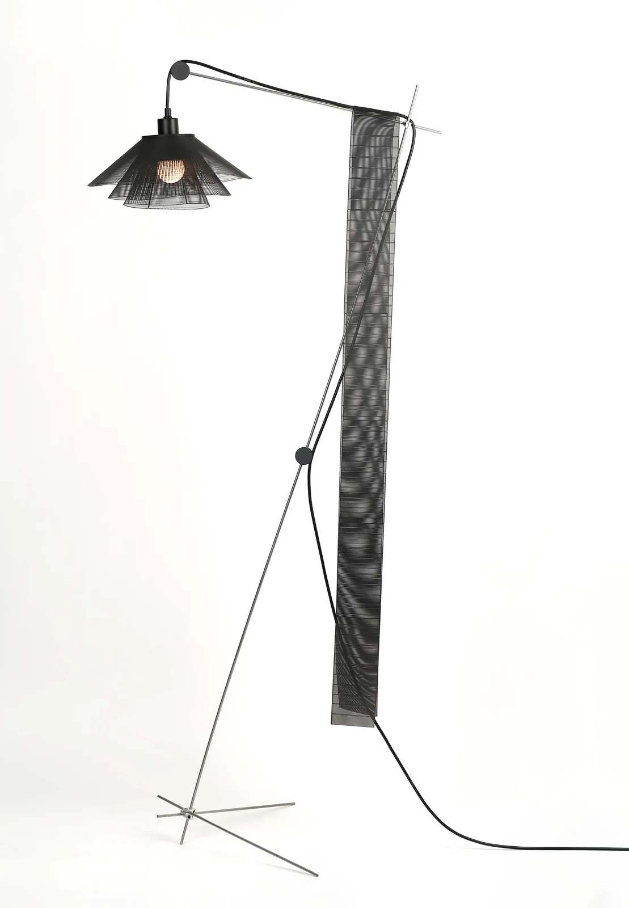
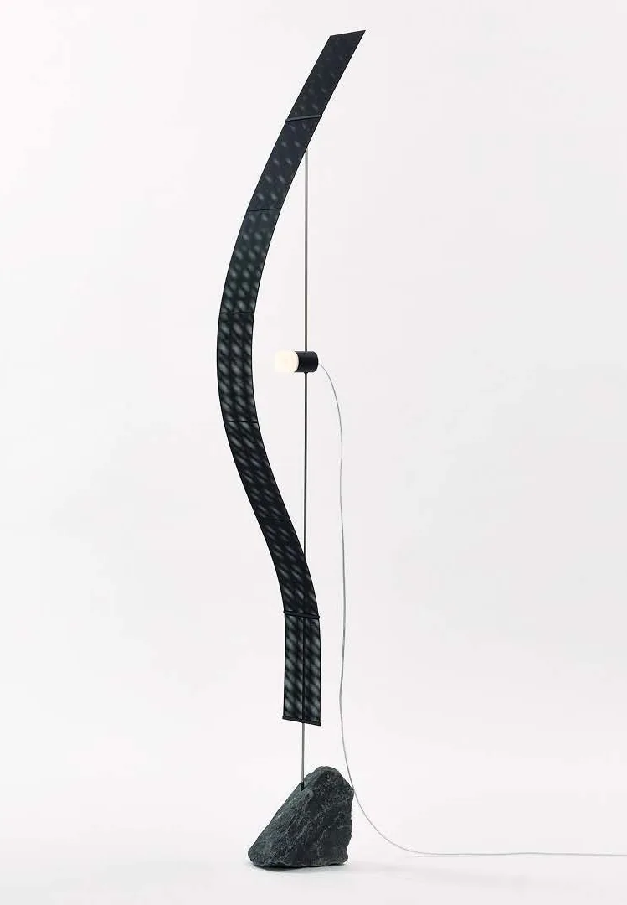
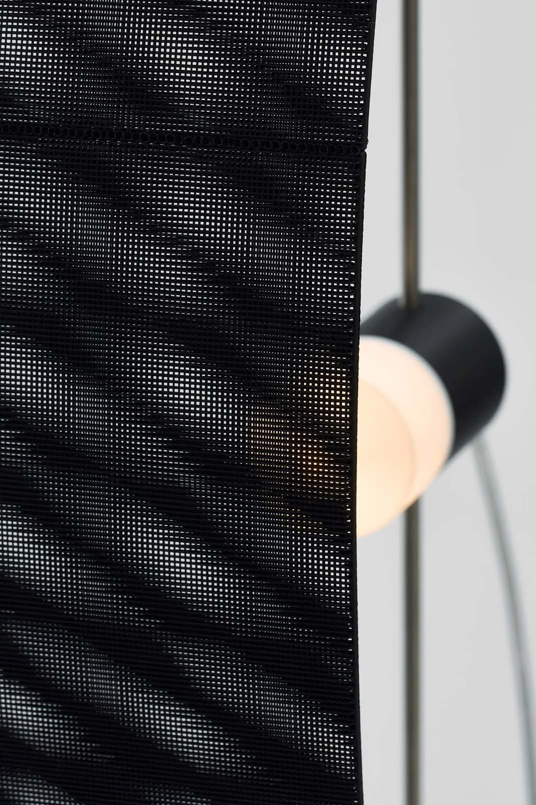
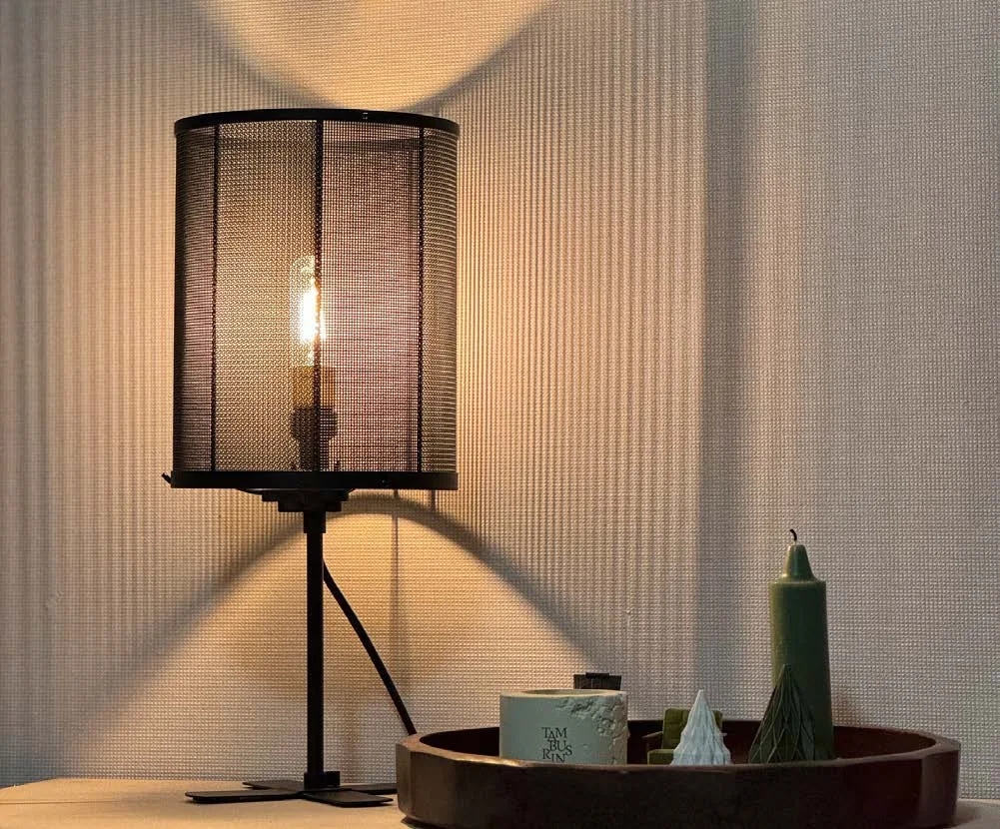
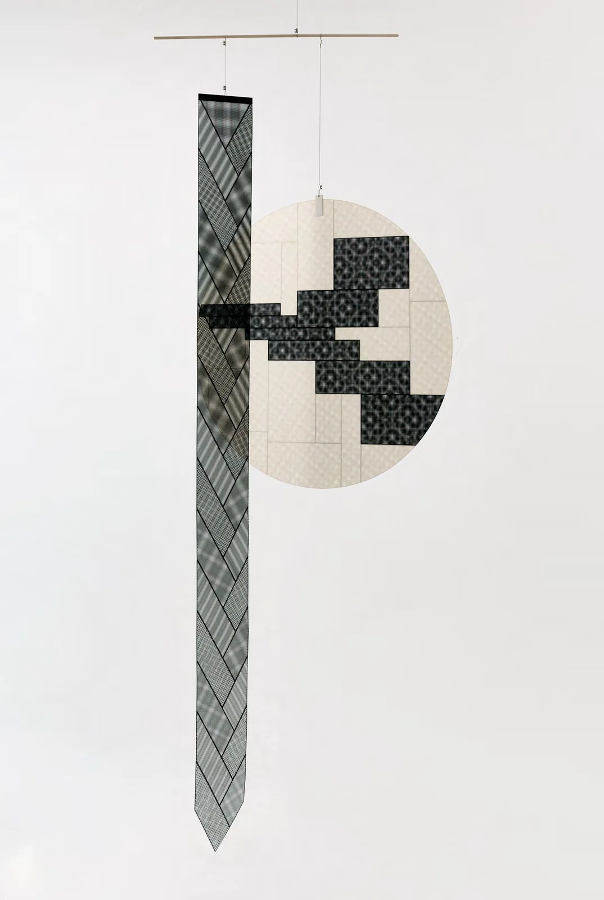
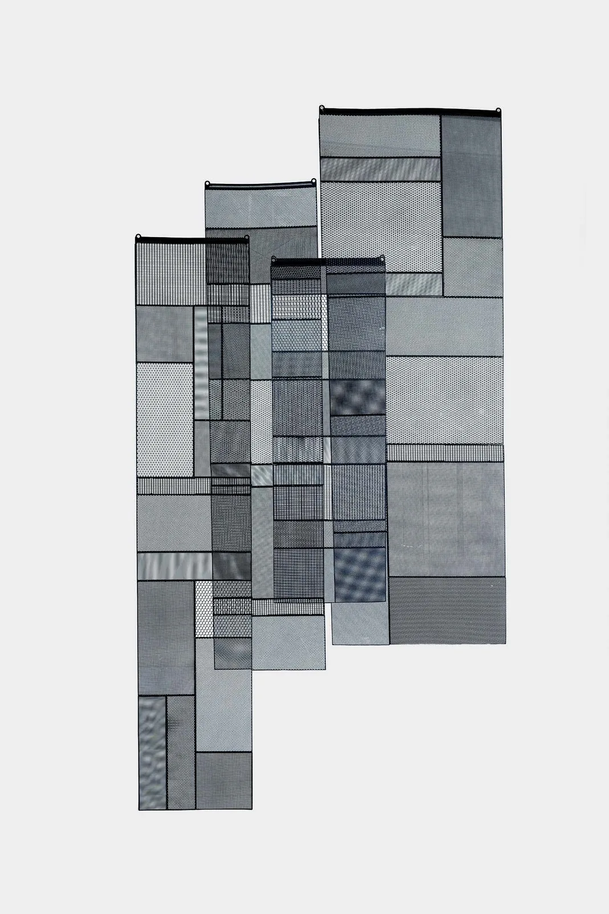
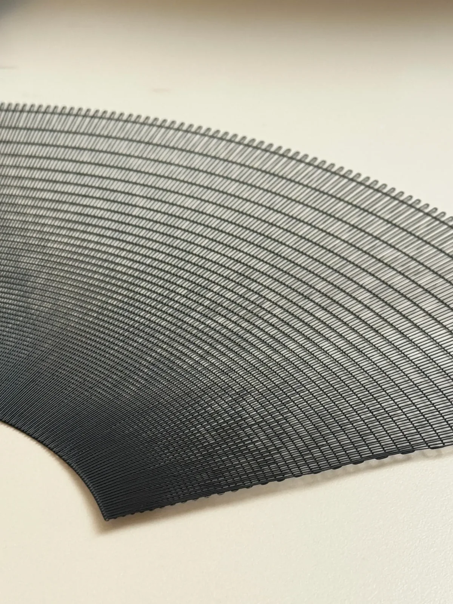

FABOR reimagines the 3D printer
as a precision loom.
Thin printed patterns are joined like jogakbo, Korean patchwork, to create flexible, translucent fabric. FABOR extends this surface into lighting, objects and spaces.

A language of engineered craft
Pattern, structure and perception
Light and shadow between thin layers.
Photo: Lee Wookyung. Courtesy of the editorial team of Craft Culture, Korea Craft & Design Foundation.
Works
01 Lighting
Light passing through,
revealing the texture.
As thin surfaces embrace light, patterns become shadows.
Layers create depth in the spaces between them.


Where the frame’s elasticity
meets the flexibility of fabric.

A single stroke
across the space.
Along a tensioned frame,
thin fabric draws a curve.
Between a taut line and a yielding surface.

Structure by day,
light by night.
A precise lattice in daylight,
a soft, ramie-like texture at night.
One surface, a different sensation.
02 Hanging objects & screens
Beyond the surface,
into the feeling of a space.
Joining small pieces becomes a way of shaping space. Screens that let light and sight pass through, and objects suspended in air, create new boundaries.


Photo: Lee Wookyung. Courtesy of the editorial team of Craft Culture, Korea Craft & Design Foundation.
Light surfaces, open boundaries.
Patterned pieces join into larger surfaces, dividing space without closing off light or sight. The patterns shift with air currents and the viewer’s position.
03 Kinetic wall art
The same surface,
a changing pattern.
Moiré emerges as patterns shift slightly out of alignment. A moving viewpoint or a physical oscillation turns a static surface into one that changes with time.
Material and process
Weaving patterns,
finding new material qualities.
FABOR uses the 3D printer like a precision loom to print PLA plastic as thin lattice structures. These 3D-printed fabric panels are joined like jogakbo, Korean patchwork, revealing fabric-like flexibility and translucency in a rigid material.
Algorithmic precision meets the sensibility of joining pieces by hand. The resulting surfaces filter light and respond to movement, giving objects and spaces a different expression.

An ongoing exploration
From the surface of an object,
to the spaces we inhabit.
FABOR extends its exploration of patterns and light into mobiles, partitions and kinetic wall art. The lightness of the material and the way pieces are joined offer a starting point for exploring a larger scale.
Finding the beauty that contemporary technology can create, within everyday life and space. This is the direction FABOR continues to explore.